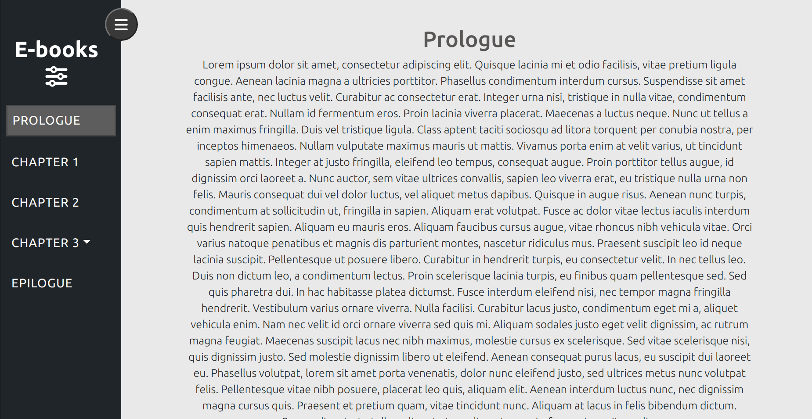
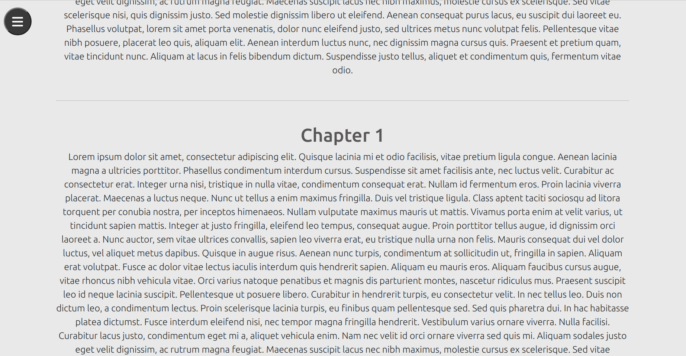
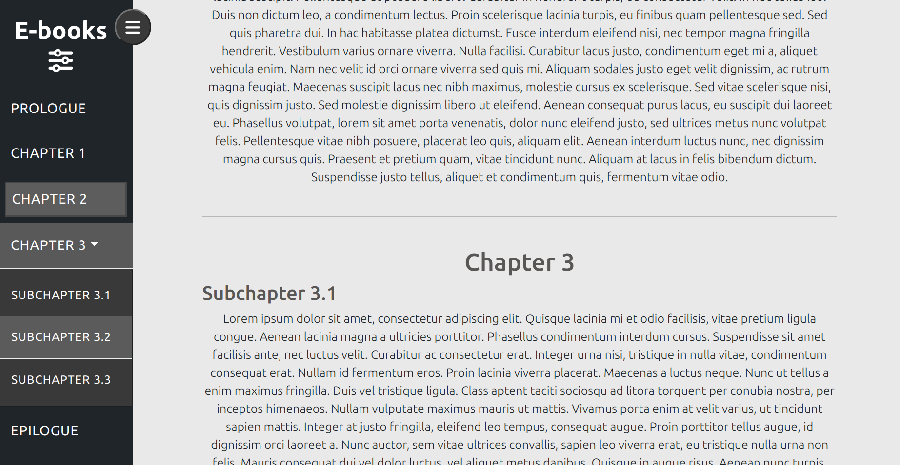

<div class="eco-cont container-fluid">
  <div class="row">
    <div class="col-12 images-cont">
      @switch(carouselSlide){
        @case(1) {
          <div class="img-cont img-1-cont">
            
          </div>
        }
        @case(2) {
          <div class="img-cont img-2-cont">
            
          </div>
        }
        @case(3) {
          <div class="img-cont img-3-cont">
            
          </div>
        }
      }
      <div class="arrows-cont">
        <a class="arrow-left" (click)="changeSlide(false)"><fa-icon [icon]="arrowLeftIcon"></fa-icon></a>
        <div class="count-cont">
          <span class="slide-count">{{ carouselSlide }}/3</span>
        </div>
        <a class="arrow-right" (click)="changeSlide(true)"><fa-icon [icon]="arrowRightIcon"></fa-icon></a>
      </div>
    </div>
    <div class="col-12 descr-cont">
      <p class="descr-text">
        Really, really old project of mine, but it always reminds me of the times I was just diving
        into the layouts and animations. Project is pretty simple and doesn't have any functionality,
        but it's made perfectly responsive, with interactive sidebar and comfortable anchoring for looking
        through the texts. Maybe it doesn't say about my programming skills a lot, but I couldn't leave
        this little memory about the start of my path without your attention.
        <br>
        Every my project is open source, so you can see all the code on my GitHub.
      </p>
    </div>
    <div class="col-12 last-block">
      <a class="accent-button" href="https://github.com/KaKKaDu/Sidebar" target="_blank">
        Go to GitHub
      </a>
    </div>
    <div class="margin-block">

    </div>
  </div>
</div>
